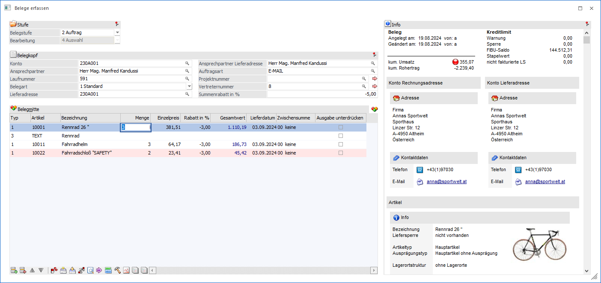
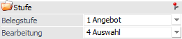
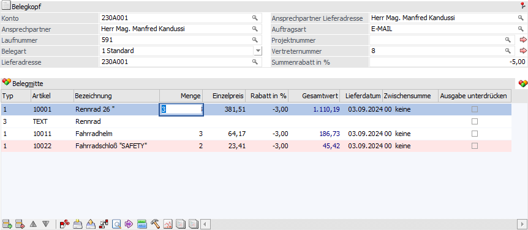
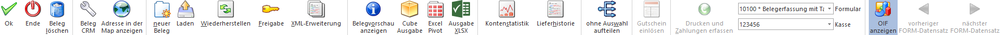

Dieses Fenster wird geöffnet, wenn in der Belegerfassung ein alternatives Formular zur Bearbeitung von Belegen ausgewählt wurde.
Ø Formular
Über die Auswahlbox "Formular" kann gewählt werden, in welcher Form die Belegerfassung stattfinden soll. Wenn die Option "0 - Allgemein" gewählt wird, dann wird wieder in die "Normalansicht" mit allen Eingabefeldern zurückgeschaltet.
Hinweis
Die Definition der Formulare für die individuelle Gestaltung erfolgt im Programm WinLine START über den Menüpunkt "Vorlagen - Vorlagen Anlage - Individuelle Formulare".
Achtung
Es werden nur die individuellen Belegvorlagen angezeigt, bei welchen die Option "Belegmitte als Tabelle" aktiviert wurde.

Folgende Eingabefelder stehen immer oberhalb des Belegkopfs zur Verfügung:
Stufe

Ø Belegstufe
An dieser Stelle kann die Belegstufe für den Beleg gewählt werden, wobei jeder Beleg 4 Stufen durchlaufen kann (Verkauf: 1 bis 4; Einkauf 5 bis 8). Folgende Möglichkeiten stehen zur Verfügung:
ü 1 - Angebot
Es wird ein Angebot
(Verkauf) erstellt. Ein gerechnetes bzw. gedrucktes Angebot hat keine weitere
interne Auswirkung.
ü 2 - Auftrag
Es wird ein Auftrag
(Verkauf) erstellt. Durch das Rechnen bzw. Drucken des Auftrags wird die
Artikeldisposition (d.h. die Bedarfsvorschau der Artikel) erzeugt.
ü 3 - Lieferschein
Es wird ein
Ausgangslieferschein (Verkauf) erstellt. Durch das Rechnen bzw. Drucken des
Lieferscheins wird die Artikeldisposition (d.h. die Bedarfsvorschau der Artikel)
aktualisiert und der Lagerabgang gebucht.
ü 4 - Faktura
Es wird eine
Ausgangsrechnung (Verkauf) erstellt. Durch das Rechnen bzw. Drucken der Faktura
werden die Daten für die Provisionsabrechnung, die Verkaufsstatistik, die
Kunden- / Artikelinfo und die WinLine FIBU/ WinLine KORE aufbereitet bzw.
bereitgestellt.
ü 5 - L.Anfrage
Es wird ein
Lieferantenanfrage (Einkauf) erstellt. Eine gerechnete bzw. gedruckte L.Anfrage
hat keine weitere interne Auswirkung.
ü 6 - L.Bestellung
Es wird ein
Lieferantenbestellung (Einkauf) erstellt. Durch das Rechnen bzw. Drucken der
L.Bestellung wird die Artikeldisposition (d.h. die Bedarfsvorschau der Artikel)
erzeugt.
ü 7 - L.Lieferschein
Es wird ein
Eingangslieferschein (Einkauf) erstellt. Durch das Rechnen bzw. Drucken des
L.Lieferscheins wird die Artikeldisposition (d.h. die Bedarfsvorschau der
Artikel) aktualisiert, der Lagerzugang gebucht und die aktuellen Einstandspreise
gebildet.
ü 8 - L.Faktura
Es wird eine
Eingangsrechnung (Einkauf) erstellt. Durch das Rechnen bzw. Drucken der
L.Faktura werden die Daten für die Einkaufsstatistik, die Lieferanten- /
Artikelinfo und die WinLine FIBU/ WinLine KORE aufbereitet bzw.
bereitgestellt.
Hinweis
Wird eine Stufe übersprungen, so werden die Werte automatisch bei der nächsten bearbeiteten Belegstufe aktualisiert.
Ø Bearbeitung
Hier wird definiert, was bei Anwahl des Buttons "Ok" passieren soll.
ü 0 - Speichern
Der Beleg wird
lediglich gespeichert, es erfolgt aber keinerlei Rückschreibung von Daten in die
Lagerbuchhaltung, Statistik, Vertreterabrechnung, Kostenrechnung oder
Finanzbuchhaltung.
ü 1 - Rechnen
Der Beleg wird
durchgerechnet und die Daten in der Datenbank zurückgeschrieben, d.h. alle an
den Belegdruck angeschlossenen Bereiche upgedated.
ü 3. - Drucken
Der Beleg wird
durchgerechnet, die Daten in der Datenbank zurückgeschrieben (d.h. alle an den
Belegdruck angeschlossenen Bereiche upgedated) und es erfolgt ein Ausdruck.
ü 4 - Auswahl
Es wird in das
Fenster "Belege erfassen - Speichern" gewechselt, in welchem man durch
nochmaliges Drücken des "Ok"-Buttons das Speichern, Rechnen oder Drucken des
Belegs starten kann.
Weitere Felder

Der weitere Aufbau ist abhängig von der Definition der Vorlage. Hierbei stehen diverse Besonderheiten zur Verfügung, welche in dem Kapitel "Vorlagen des Typs "Bewegungsdaten - Belege"" detailliert beschrieben werden.
Buttons

Ø Ok
Durch Drücken des Buttons "Ok" bzw. der Taste F5 wird jene Aktion, welche unter "Bearbeitung" definiert wurde, ausgeführt.
Ø Ende
Mit dem Button "Ende" bzw. der Taste ESC wird das Fenster geschlossen und alle getätigten Eingaben verworfen.
Ø Beleg löschen
Durch Anklicken des Buttons "Löschen" wird der Beleg gelöscht bzw. storniert (nähere Informationen bezüglich der Stornierung eines Belegs entnehmen Sie bitte dem WinLine FAKT-Handbuch, Kapitel Beleg stornieren).
Ø Beleg CRM
Mit Hilfe des Buttons "Beleg CRM" kann in das Fenster "Belege - CRM-Ansicht" gewechselt werden. Dort ist es möglich bestehende CRM-Fälle des Belegs zu betrachten, neue Fälle zu erfassen oder bestehende Fälle mit dem Beleg zu verknüpfen bzw. die Verknüpfungen zu entfernen.
Ø Adresse in der Map anzeigen
Durch Anwahl des Buttons "Adresse in der Map anzeigen" wird im Standard-Browser das Kartenmaterial von Google Maps geladen und als Suchanschrift die Daten des Personenkontos vorbelegt. Welches Konto hierbei übergeben werden soll, kann mit Hilfe eines Auswahlmenüs entschieden werden:
ü Rechnungsadresse in der Map
anzeigen
Es werden die Daten des Rechnungsempfängers dargestellt.
ü Lieferadresse in der Map
anzeigen
Es werden die Daten der Lieferadresse dargestellt.
ü Zusatzadresse in der Map
anzeigen
Es werden die Daten der Zusatzadresse in der Map dargestellt.
Hinweis
Diese Auswahl steht nur zur Verfügung, wenn dem Beleg eine Zusatzadresse zugeordnet wurde.
Ø Neuer Beleg
Wenn während der Erfassung eines Beleges ein weiterer Beleg vom aktuellen Benutzer erfasst werden soll, so kann durch Drücken des Buttons "Neuer Beleg" der aktuell im Zugriff befindliche Beleg geparkt werden. Dabei wird der Beleg in eine mesonic-interne Zwischenablage kopiert und die Erfassungsmaske initialisiert.
Hinweis 1
Wird ein Beleg über die Funktion "Beleg bearbeiten" aus einem FIBU-Stapel aufgerufen, so steht die Funktion "Neuer Beleg" nicht zur Verfügung
Hinweis 2
Mit Hilfe der Tastenkombination STRG + Button "Neuer Beleg" wird eine neue Instanz geöffnet, in welcher direkt die Belegerfassung gestartet wird.
Ø Laden
Über den Button "Laden" können geparkte Belege jederzeit wieder aufgerufen werden.
Hinweis
Wird ein Beleg über die Funktion "Beleg bearbeiten" aus einem FIBU-Stapel aufgerufen, so steht die Funktion "Laden" nicht zur Verfügung.
Ø Wiederherstellen
Durch Drücken dieses Buttons können "temporäre" Änderungen wieder zurückgesetzt werden. D.h. Änderungen, die im gerade geladenen Beleg durchgeführt wurden, werden verworfen und der Beleg im Ursprungszustand neu geladen.
Ø Freigabe
Durch Anklicken des Buttons "Freigabe" kann der Freigabestatus des Belegs verändert werden.
Ø XML-Erweiterung
Über den Button "XML-Erweiterung" können zusätzliche Informationen zum Beleg in einer XML-Struktur erfasst werden (nähere Informationen hierzu entnehmen Sie bitte dem WinLine Allgemein-Handbuch, Kapitel "XML-Erweiterung").
Ø Belegvorschau
Durch Anklicken des Buttons "Belegvorschau" kann der Beleg in einer Belegvorschau angezeigt werden.
Hinweis
Der Name des hierfür genutzten Formulars setzt sich aus P02WxxyyPV zusammen. Für "xx" wird die Belegstufe eingesetzt (z.B. "44" für "4 - Faktura") und für das "yy" das gewählte Listbild. Wird im Listbild in der Belegstufe "4 - Faktura" z.B. ein "S" eingetragen, so würde auf das Formular "P02W44SPV" zugegriffen werden.
Ø Power Report
Durch Drücken des Buttons "Power Report" werden die erfassten Belegzeilen (nur Zeilen des Typs "1 - Artikel" und "6 - Gutschrift") auf Basis von Cube-Daten grafisch dargestellt. Die Ausgabe ist individuell anpassbar und erfolgt in der Form von "Widgets", die unterschiedlichste Darstellungen ermöglichen.
Hinweis
Alternativpositionen (Hinterlegung 1 bis 9 in der Spalte "Alternativposition") werden ebenfalls nicht angezeigt.
Ø Cube Ausgabe
Durch Anwahl des Buttons "Cube Ausgabe" werden die erfassten Belegzeilen in Form einer Cube-Ansicht angezeigt. Hierbei werden nur Zeilen des Typs "1 - Artikel" und "6 - Gutschrift" berücksichtigt.
Hinweis
Alternativpositionen (Hinterlegung 1 bis 9 in der Spalte "Alternativposition") werden ebenfalls nicht angezeigt.
Ø Excel Pivot
Durch Anwahl des Buttons "Excel Pivot" werden die erfassten Belegzeilen in Form einer Pivot Ausgabe in Microsoft Excel (2007 oder höher) angezeigt. Hierbei werden nur Zeilen des Typs "1 - Artikel" und "6 - Gutschrift" berücksichtigt.
Hinweis
Alternativpositionen (Hinterlegung 1 bis 9 in der Spalte "Alternativposition") werden ebenfalls nicht angezeigt.
Ø Ausgabe XLSX
Durch Anwahl des Buttons "XLSX Ausgabe" werden die erfassten Belegzeilen in Form einer XLSX-Datei ausgegeben. Hierbei werden nur Zeilen des Typs "1 - Artikel" und "6 - Gutschrift" berücksichtigt.
Hinweis
Alternativpositionen (Hinterlegung 1 bis 9 in der Spalte "Alternativposition") werden ebenfalls nicht angezeigt.
-----
Ø Kontenstatistik
Durch Anklicken des Buttons "Kontenstatistik" erhält man eine Übersicht über die Verkaufszahlen.
Hinweis
Über das geöffnete Fenster "Statistik Überblick" kann die Auswertung geändert werden (z.B. zur Darstellung einer komprimierten Übersicht).

Ø Lieferhistorie
Durch Anwahl des Buttons "Lieferhistorie" werden die bisherigen Lieferungen des Personenkontos anzeigt. Basis hierfür sind alle bisherigen Lieferscheine bzw. Fakturen, die an diesen Kunden ausgestellt wurden bzw. vom Lieferanten gekommen sind.

Folgende Funktionen sind möglich bzw. Informationen werden angezeigt (nähere Informationen entnehmen Sie bitte dem WinLine FAKT-Handbuch, Kapitel Lieferhistorie):
ü Die Eingrenzung der Anzeige kann detaillierter erfolgen - z.B. auf eine bestimmte Artikelgruppe, Artikelnummer, Artikeluntergruppe oder einen bestimmten Datumsbereich.
Hinweis
Wenn Selektionskriterien verändert wurden, kann die Tabelle mit Hilfe des Buttons "Anzeigen" aktualisiert werden.
ü Neben der Anzeige der Artikelnummer, dem damaligen Preis, Rabatt, dem Lieferdatum und der Laufnummer des Beleges wird vor allem aber auch die Menge angezeigt (Spalte "gelief. Menge"), die damals geliefert wurde.
ü In der Spalte "Liefermenge" kann die Menge eingeben werden, welche DIESMAL geliefert werden soll.
ü Sobald der "Ok"-Button bestätigt wird, werden alle Artikelzeilen, bei denen entweder in der Spalte "Liefermenge" ein Wert steht oder die Checkbox in der Spalte "Auswahl" gesetzt ist, automatisch in den aktuellen Beleg übernommen.
Hinweis
Eine Artikelzeile kann auch durch einen Doppelklick in die Belegmitte übernommen werden.
ü Durch Drücken der Taste "Beleginfo" wird der Beleg, mit dem die Artikel damals ausgeliefert wurden, nochmals am Bildschirm angezeigt.
Hinweis
Diese Funktion ist vor allem im Telefonverkauf interessant, wo aktuelle und vor allem schnelle Informationen Voraussetzung für einen erfolgreichen Verkauf sind (nähere Informationen hierzu entnehmen Sie bitte dem Kapitel "Telefonverkauf").
Hinweis
Weitere Einstellungen zur Anzeige der Lieferhistorie können mittels des Buttons "Optionen" eingeblendet werden.
Ø ohne Auswahl aufteilen
Bei Anwahl des Buttons "ohne Auswahl aufteilen" werden noch nicht aufgeteilte Hauptartikel mit Ausprägungen auf die Ausprägungen aufgeteilt und Artikel mit Lagerortstruktur entsprechenden Lagerorten zugewiesen.
Hinweis - nicht aufgeteilte Hauptartikel mit Ausprägungen
Die Aufteilung wird nur durchgeführt, wenn in den Aufteilungsoptionen (WinLine FAKT - Stammdaten - Ausprägungen - Aufteilungsoption) die Aufteilungsart " 1 - muss erfolgen" hinterlegt wurde (abhängig von der Belegstufe und dem Artikeltyp). Zusätzlich sind folgende Punkte zu beachten:
ü Beim Erfassen eines Lieferscheins
kann die Auftragsmenge eines Artikels mit Ausprägung automatisch auf die
vorhandenen Ausprägungen aufgeteilt werden (z.B. Verkauf Chargen; es sollen
automatisch zuerst die ältesten Chargen ausgeliefert werden).
Sollte die
Auftragsmenge dabei größer als der vorhandene Lagerstand sein, so kann in den
FAKT-Parametern (WinLine START - Parameter - Applikations-Parameter - FAKT -
Artikel - Ausprägungen - Bereich "Bei automatischer Aufteilung soll die
Restmenge") definiert werden, was mit der Restmenge passieren soll.
ü Falls ein oder mehrere Hauptartikel nicht vollständig aufgeteilt werden können, da z.B. nicht genug Chargen mit Lagerstand vorhanden sind, so wird eine Meldung ausgegeben und alle Hauptartikelzeilen, bei denen eine Teillieferung durchgeführt wurde, werden mit einem Infosymbol versehen.
ü Bei der automatischen Aufteilung wird die Ausprägungsvorgabe (Register "Zusatz", Bereich "Vorbesetzung Ausprägungen") des zugrundeliegenden Belegs berücksichtigt. Wird zusätzlich mit einer Ausprägungsvorlage gearbeitet, in welcher wiederum eine Vorbelegung vorhanden ist, so übersteuert diese die Ausprägungsvorgabe des Belegs.
Hinweis - Artikel mit Lagerortstruktur
Die Zuweisung wird nur durchgeführt, wenn in den Aufteilungsoptionen (WinLine FAKT - Stammdaten - Lagerorte - Aufteilungsoption) die Aufteilungsart " 1 - muss erfolgen" oder "2 - kann erfolgen" hinterlegt wurde (abhängig von der Belegstufe und der Lagerortstruktur). Eine detaillierte Beschreibung der Voraussetzungen bzw. Arbeitsabläufe kann dem Kapitel Belegerfassung - Register "Mitte" - Automatische Lagerortaufteilung entnommen werden.
Ø Gutschein einlösen
Durch Anwahl diese Buttons kann ein Gutschein eingelöst werden. Diese Funktion steht ab der Belegstufe "Auftrag" zur Verfügung.
Hinweis
Gutscheine werden nicht über einen gesonderten Belegzeilentyp gekennzeichnet, sondern als "3 - Text" dargestellt.
Ø Drucken und Zahlungen erfassen
Durch Anwahl dieses Buttons wird der Beleg gedruckt und im Anschluss daran können Zahlungen zu diesem Beleg erfasst werden.
Ø Formular
Über die Auswahlbox "Formular" kann gewählt werden, in welcher Form die Belegerfassung stattfinden soll. Wenn die Option "0 - Allgemein" gewählt wird, dann wird wieder in die "Normalansicht" mit allen Eingabefeldern zurückgeschaltet.
Hinweis
Die Definition der Formulare für die individuelle Gestaltung erfolgt im Programm WinLine START über den Menüpunkt "Vorlagen - Vorlagen Anlage - Individuelle Formulare".
Achtung
Es werden nur die individuellen Belegvorlagen angezeigt, bei welchen die Option "Belegmitte als Tabelle" aktiviert wurde.
Ø Kasse
Aus der Auswahlliste kann, sofern in den Kassenstammdaten mehrere Kassen angelegt wurden, eine definierte Kassenidentifikationsnummer gewählt werden. Hierüber kann dann gesteuert werden, in welchem DEP (Datenerfassungsprotokoll) der Beleg erscheinen soll.
Hinweis
Die zuletzt gewählte Kassenidentifikationsnummer wird benutzerspezifisch gespeichert.
Ø OIF anzeigen
Mit Hilfe dieses Buttons kann der OIF-Bereich im rechten Bereich des Fensters aktiviert bzw. deaktiviert werden.
Hinweis
Eine Aktivierung ist nur möglich, wenn in der Vorlage die Option "OIF anzeigen" aktiviert wurde.
Ø vorheriger FORM-Datensatz / nächster FORM-Datensatz
Basiert der Beleg auf einem CRM-Fäll, in welchem FORM-Erfassung getätigt wurden, so wird neben der Belegerfassung das FORM-DataCenter dargestellt. In diesem kann mit Hilfe dieser Buttons zwischen den einzelnen Erfassungen gewechselt werden.